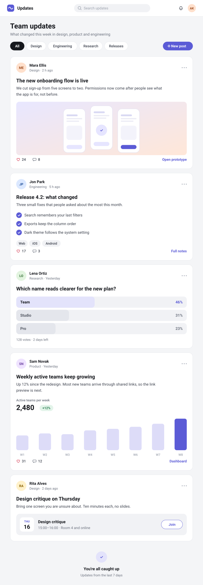

Team updates
Case study
Film gallery
A tall screen, read at the speed you scroll
The whole feed, top to bottom

Team updates.
The stage stays pinned under the bar, the screen moves exactly as far as the page does.
For comparison: a regular stage fits it whole
Fit to stage.
Right for most screens, too small to read for a tall one.
End of the page